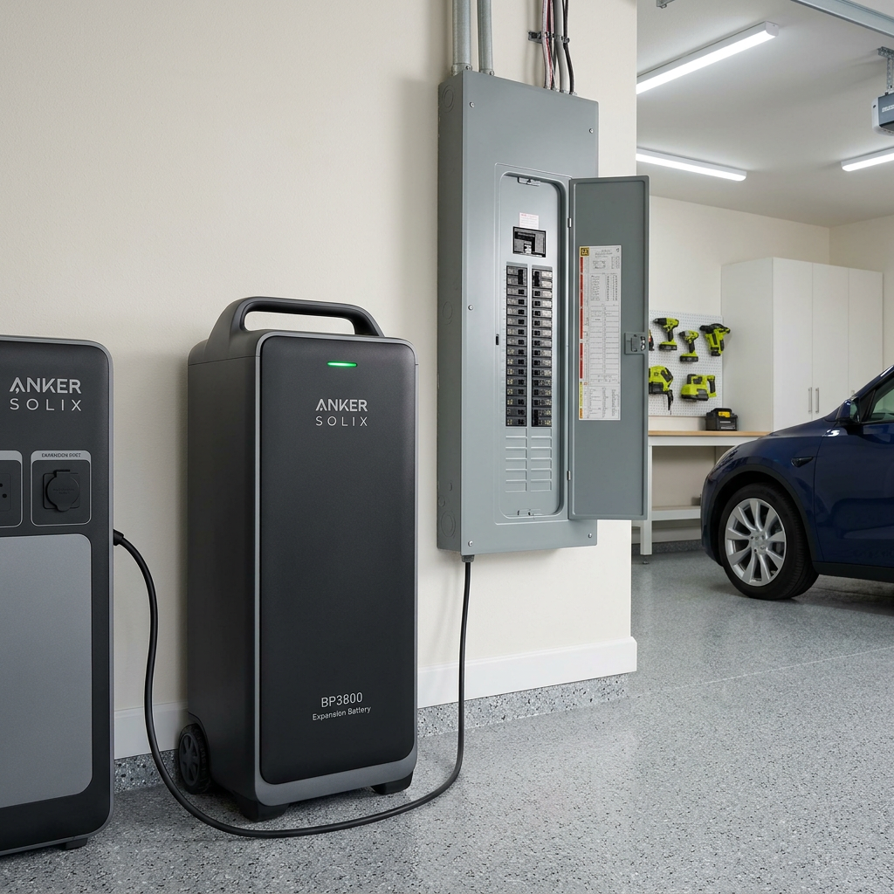
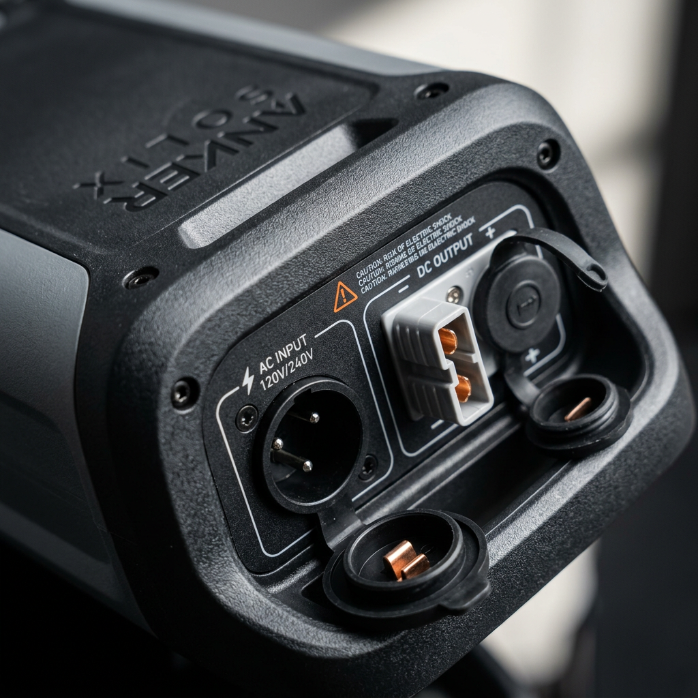

Anker SOLIX BP3800 Review: The Ultimate Power Expansion for Total Energy Independence
Eliminate Power Anxiety: Why Your Home Backup Isn't Complete Yet
You’ve invested in a high-end portable power station because you value security. But when the grid goes dark and the hours turn into days, that sinking feeling in your stomach returns. Will your refrigerator stay cold? Can you run the AC through the night? The reality is that for true whole-home backup, a single base unit is often just the beginning. The Anker SOLIX BP3800 is the definitive answer to the 'power gap,' offering a seamless way to double, triple, or even septuple your energy reserves without the complexity of traditional solar installs.
High-intent buyers know that capacity is king. Whether you are prepping for emergency outages or building a sustainable off-grid lifestyle, the ability to scale determines your quality of life. The Anker SOLIX BP3800 isn't just an accessory; it is the building block of a resilient energy ecosystem.

Comparing Your Power Potential: Base vs. Expanded
Before we dive into the technical mastery of this unit, let’s look at how adding the Anker SOLIX BP3800 transforms your energy capabilities. This table compares the standard setup against the expanded configurations enabled by this specific battery module.
| Configuration | Total Capacity | Best For... | Verdict |
|---|---|---|---|
| Anker SOLIX F3800 (Base) | 3.84kWh | Essential appliances & short outages | Great entry point |
| F3800 + (1) BP3800 | 7.68kWh | Full day of heavy appliance use | Recommended for most homes |
| F3800 + (6) BP3800 | 26.9kWh | Multi-day off-grid independence | The ultimate power fortress |
The Science of Longevity: LiFePO4 Technology
Not all batteries are created equal. The Anker SOLIX BP3800 utilizes EV-grade Lithium Iron Phosphate (LiFePO4) chemistry. This is the gold standard for home energy storage. Unlike standard lithium-ion batteries that degrade after a few hundred cycles, the BP3800 is rated for over 3,000 cycles to 80% capacity. In real-world terms, that is over a decade of daily use.
This longevity is backed by Anker’s industrial-grade battery management system (BMS), which monitors temperature and voltage thousands of times per second. When you purchase the anker solix bp3800, you aren't just buying power for tonight; you are securing your home's energy future for the next ten years.

Scalability Without the Headache
One of the biggest pain points in home solar is the installation. Traditional systems require electricians, permits, and permanent wall mounting. The anker solix bp3800 disrupts this model with a plug-and-play expansion port. You simply connect the expansion cable from the BP3800 to your F3800 base unit, and the system automatically recognizes the additional 3,840Wh of capacity.
- Stackable Design: Save space by stacking units vertically.
- Dual-Voltage Support: When paired with the base unit, it supports both 120V and 240V outputs, capable of running heavy-duty dryers and well pumps.
- Fast Recharging: Supports rapid AC and solar recharging speeds, ensuring you're topped off quickly when the sun is out or the grid returns.
Real-World Performance: What Can 3.8kWh Do?
Adding a single Anker SOLIX BP3800 to your setup effectively doubles your runtime. For a family of four, this means the difference between just keeping the lights on and actually maintaining a normal lifestyle. You can run a full-sized refrigerator for an additional 30+ hours, or power a high-efficiency heater during a winter storm without fear of immediate depletion.
For digital nomads or those living in vans, the anker solix bp3800 provides the massive overhead needed to run induction cooktops and starlink terminals simultaneously without checking the battery percentage every twenty minutes.
Final Verdict: Is the Anker SOLIX BP3800 Worth It?
If you already own or are planning to buy the Anker SOLIX F3800, the Anker SOLIX BP3800 expansion battery is the most logical upgrade you can make. It offers the best price-per-watt-hour in its class and features the safest battery chemistry available today. Don't wait for the next storm to realize you don't have enough juice. Secure your expansion today and experience the peace of mind that comes with true energy surplus.